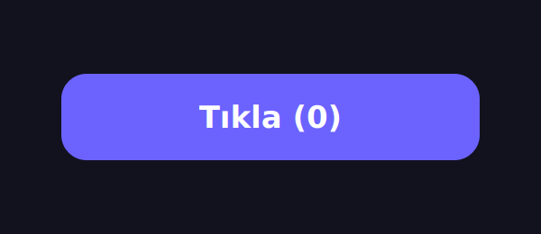

Sıfırdan mı Yazalım,
Kalıtımla mı Kuralım?
Kalıtım I — Hazır Sınıflardan Kendi Widget'ımıza
Aslında Kalıtımı Zaten Kullandın
Geçen hafta class SayacPenceresi(QWidget)
yazdık — yani QWidget'tan türedik, farkında olmadan kalıtım yaptık. Bu hafta onu bilinçli yapıyoruz.
1 · Neden?
Kod tekrarını önlemek, hazır sınıfları yeniden kullanmak.
2 · Nasıl?
class Çocuk(Ata) — devral,
ekle, super() ile kur.
3 · Qt'de
QPushButton'dan kendi widget'ımızı türet.
Sonunda: küçük bir tıklama paneli uygulaması yapacağız.
İki Sınıf, Neredeyse Aynı Kod
class KirmiziButon(QPushButton):
def __init__(self):
super().__init__()
self.sayac = 0
self.clicked.connect(self.artir)
self.setStyleSheet("background:#ef4444")
def artir(self):
self.sayac += 1
self.setText(f"Tıkla ({self.sayac})")class MaviButon(QPushButton):
def __init__(self):
super().__init__()
self.sayac = 0
self.clicked.connect(self.artir)
self.setStyleSheet("background:#3b82f6")
def artir(self):
self.sayac += 1
self.setText(f"Tıkla ({self.sayac})")Tek fark: renk. Geri kalan her şey kopyala-yapıştır.
Ya 5 renk daha istersek? Ya artir()'de bir hata bulursak — 7 yerde mi düzelteceğiz?
Ortak Olanı Bir Ataya Taşı
class SayacButonu(QPushButton): # ORTAK olan yukarıda
def __init__(self):
super().__init__()
self.sayac = 0
self.clicked.connect(self.artir)
def artir(self):
self.sayac += 1
self.setText(f"Tıkla ({self.sayac})")class KirmiziButon(SayacButonu): # sadece FARK
def __init__(self):
super().__init__()
self.setStyleSheet("background:#ef4444")
class MaviButon(SayacButonu):
def __init__(self):
super().__init__()
self.setStyleSheet("background:#3b82f6")Sayma mantığı tek yerde. Yeni renk = 3 satır. Hata = tek düzeltme. İşte kalıtım bunun için var.
Kalıtım Nedir?
👑 Ata (Base / Super)
Temel/üst sınıf. Kendisinden yeni sınıflar türetilir; ortak davranışı taşır.SayacButonu
🧬 Çocuk (Derived / Sub)
Atadan türeyen sınıf. Her şeyi devralır + kendi farkını ekler.KirmiziButon
🔗 "is-a" İlişkisi
KirmiziButon bir SayacButonu'dur; o da bir QPushButton'dur.
Ata için base / super / üst sınıf / ata; çocuk için derived / sub / alt sınıf / çocuk — hepsi aynı şey.
Kalıtım Bir "is-a" Zinciridir
Canlı
Hayvan
Kedi
Kedi bir Hayvan'dır, Hayvan bir Canlı'dır → Kedi, Canlı'nın da tüm özelliklerini taşır. Kalıtım geçişlidir.
"is-a" mı, "has-a" mı?
🔗 is-a → Kalıtım
Araba bir Taşıt'tır.class Araba(Tasit)
Çocuk, atanın bir türüdür.
🧩 has-a → İçerme (composition)
Araba'nın bir Motoru vardır.self.motor = Motor()
Nesne, başka
nesneyi içinde tutar.
Soru: "X bir Y midir?" → evetse kalıtım. "X'in bir Y'si var mı?" → evetse içerme. Yanlış seçim kötü tasarım demektir.
Türetmenin Söz Dizimi
class Arac: # ATA
def calistir(self): ...
class Araba(Arac): # Arac'tan TÜRE
pass # hiçbir şey yazmasak bile...Araba, Arac'ın tüm metotlarını hazır aldı —
Araba().calistir() çalışır.
Parantez içine atayı yazmak = "bundan türe."
Python'da her sınıf gizliden object'ten
türer — class Arac: aslında class Arac(object): demektir.
Öznitelik ve Metot — İkisi de Devralınır
class Arac:
def __init__(self, marka):
self.marka = marka # ÖZNİTELİK
def calistir(self): # METOT
print(self.marka, "çalıştı")
class Araba(Arac):
pass
a = Araba("Toyota")
a.calistir() # "Toyota çalıştı"Araba ne marka'yı ne calistir'ı yazdı — ikisini de
Arac'tan devraldı.
Öznitelik = veri (durum). Metot = davranış. Kalıtım her ikisini de taşır.
Çocuk Kendi Farkını Ekler
class Araba(Arac):
def klima_ac(self): # YENİ metot (sadece Araba'da)
print("klima açıldı")
a = Araba("Toyota")
a.calistir() # Arac'tan geldi
a.klima_ac() # Araba'nın kendi eklemesi
b = Arac("kamyon")
b.klima_ac() # 💥 HATA: Arac'ta böyle bir metot yokÇocuk atadan gelenlere ekler; ama eklediği ataya geri gitmez.
Kalıtım tek yönlüdür: çocuk atayı görür, ata çocuğu görmez.
__init__ Yazmazsan Ne Olur?
class Hayvan:
def __init__(self, ad):
self.ad = ad
class Kedi(Hayvan):
pass # kendi __init__'i YOK
k = Kedi("Tekir") # Hayvan.__init__ çalışır
print(k.ad) # "Tekir"Çocukta __init__ yoksa, Python atanınkini kullanır. Bedavaya kurucu!
Bu yüzden basit türetmelerde pass yeter.
Kendi
__init__'in Varsa: super()
class Kedi(Hayvan):
def __init__(self, ad, renk):
super().__init__(ad) # 1) atanın kurucusu — ad'ı o kursun
self.renk = renk # 2) sonra KENDİ eklemen
k = Kedi("Tekir", "sarı")
print(k.ad, k.renk) # "Tekir sarı"Kendi __init__'ini yazınca atanınki otomatik çalışmaz — onu sen
super().__init__() ile çağırırsın.
Unutursan k.ad hiç kurulmaz → hata.
(Detay: Hafta 3)
Tüm Qt Bir Kalıtım Ağacı
QObject — her Qt nesnesinin atası (sinyal/slot)
QWidget — görünen her şey (QLabel, QAbstractButton… kardeşler)
QPushButton — hazır buton
SayacButonu
(bizim — QPushButton'dan türer)
SayacButonu, QPushButton üzerinden tüm Qt geçmişini (QWidget, QObject) devralır.
Neden Kendi Widget'ımızı Yaparız?
♻️ Yeniden Kullan
Bir kez yaz, uygulamanın her yerinde kullan. Kopyala-yapıştır yok.
📦 Bir Arada Tut
Görünüm + davranış + durum tek sınıfta paketlenir (kapsülleme).
🔌 Uyumlu
Hâlâ bir QPushButton olduğu için Qt'nin her yerine takılır.
Profesyonel Qt uygulamaları düzinelerce özel widget'tan oluşur — hepsi kalıtımla.
Kendi Sayaç Butonumuz
class SayacButonu(QPushButton): # QPushButton'dan TÜRE
def __init__(self):
super().__init__() # atanın kurucusu (şart!)
self.sayac = 0 # KENDİ eklediğimiz durum
self.clicked.connect(self.artir) # devralınan sinyal
self.guncelle()
def artir(self): # KENDİ davranışımız
self.sayac += 1
self.guncelle()
def guncelle(self):
self.setText(f"Tıkla ({self.sayac})") # devralınan metot
Ne Devraldık, Ne Ekledik?
✅ Bedavaya Devralındı
• Tıklanabilirlik ve clicked sinyali
• setText(), boyut, stil
•
Pencereye eklenebilme — QPushButton neyse hepsi.
➕ Biz Ekledik
• self.sayac özniteliği (durum)
• artir() ve guncelle()
metotları
• Kendi kendini güncelleme davranışı.
Kalıtımın gücü: sıfırdan buton yazmadık — hazır olanı alıp yalnızca farkı ekledik.
Buton Artık Akıllı
self.sayac += 1
self.setText(f"Tıkla ({self.sayac})")
Sayaç QLabel'de değil, butonun kendisinde. Çünkü
SayacButonu hem QPushButton hem de kendi durumunu taşıyan bir nesne. Tıkla!
Aynı Buton, Daha Zarif: property
Yukarıdaki hâli de doğru. Ama Python'da @property ile daha şık
olur: atama, arayüzü kendiliğinden günceller.
class SayacButonu(QPushButton):
def __init__(self):
super().__init__()
self.sayac = 0 # setter çağrılır → metni de kurar
self.clicked.connect(self.artir)
@property
def sayac(self): # GETTER (okuma)
return self._sayac
@sayac.setter
def sayac(self, deger): # SETTER (yazma)
self._sayac = deger
self.setText(f"Tıkla ({deger})") # arayüzü güncelle
def artir(self):
self.sayac += 1 # setter hallederGetter @property →
btn.sayac okunurken çalışır.
Setter @sayac.setter →
atama, arayüzü kendisi günceller.
✅ guncelle() gerekmez — daha temiz kapsülleme.
Gerçekten bir QPushButton mu?
btn = SayacButonu()
isinstance(btn, SayacButonu) # True
isinstance(btn, QPushButton) # True ← "is-a" !
issubclass(SayacButonu, QPushButton) # Trueisinstance(nesne, Sınıf) → bu nesne o türden mi? issubclass(A, B) →
A sınıfı B'den mi türedi? İkisi de kalıtım zincirine bakar. Bu yüzden
SayacButonu'nu bir QPushButton beklenen her yere koyabilirsin.
Pencereyi de Türetelim
class Panel(QWidget): # QWidget'tan TÜRE
def __init__(self):
super().__init__()
self.setWindowTitle("Tıklama Paneli")
duzen = QVBoxLayout(self)
duzen.addWidget(SayacButonu()) # kendi widget'ımızı kullan
duzen.addWidget(SayacButonu()) # ikinci, BAĞIMSIZ butonPanel QWidget'tan türer (is-a); içinde SayacButonu'lar tutar (has-a).
Kalıtım + içerme birlikte.
İki buton ayrı nesne → sayaçları bağımsız.
Aynı Sınıf, İki Ayrı Nesne
Aynı SayacButonu sınıfından iki nesne. Birini artır → diğeri değişmez.
Her nesnenin kendi self.sayac'ı var. Kalıtım
nesne bağımsızlığını bozmaz.
Bir sınıf yazdık, iki (ya da yüz) bağımsız buton ürettik. Yeniden kullanımın gücü.
Sık Yapılan Hatalar
😱 super() unutmak
Kendi __init__'inde super().__init__()
çağırmamak → widget yarım kalır.
🔀 is-a / has-a karıştırmak
"Sahip olma"yı kalıtımla çözmeye çalışmak → kötü tasarım.
✏️ Atayı bozmak
Çocuğa özel bir şeyi ata sınıfa yazmak → tüm kardeşleri etkiler.
Kural: ortak olan ataya, farklı olan çocuğa.
Kendini Test Et
Araba(Arac) — calistir()'ı kullanabilir mi?SayacButonu(QPushButton), setText()'i kullanır mı?__init__'i olan çocuk ilk ne yapar?Bu Hafta Ne Öğrendik?
✅ Kalıtım kod tekrarını önler (DRY)
✅ is-a (kalıtım) ≠ has-a (içerme)
✅ class Çocuk(Ata) — öznitelik + metot devralınır
✅ Kurucu: __init__ yoksa atanınki; varsa super()
✅ Tüm Qt bir ağaç: QObject→QWidget→QPushButton→SayacButonu
✅ isinstance/issubclass + @property
Proje: Renkli Tıklama Paneli
Kalıtımı kullanarak, farklı renklerde sayan butonlardan oluşan bir panel yap. Aşağıdaki sınıf iskeleti üzerine kur.
class SayacButonu(QPushButton): # ORTAK ata
def __init__(self):
super().__init__()
self.sayac = 0
self.clicked.connect(self.artir)
def artir(self):
self.sayac += 1
self.setText(f"Tıkla ({self.sayac})")
# Görev: bundan renkli çocuklar türet, Panel'e diz🎯 Hedef
3 farklı renkte buton içeren, her biri kendi tıklamasını sayan bir pencere.
Süre: ~40 dk. Takıldığın yerde slaytlara dön.
Nasıl İlerleyeceksin?
1 · Ata
SayacButonu sınıfını yaz
(yukarıdaki iskelet). Test et: tek buton sayıyor mu?
2 · Renkli Çocuklar
KirmiziButon,
YesilButon, MaviButon türet — her biri super().__init__() +
setStyleSheet.
3 · Panel
Panel(QWidget) yaz;
QVBoxLayout'a üç butonu ekle.
4 · Çalıştır
if __name__ == "__main__":
içinde app, Panel(), show(), exec().
✅ Kontrol: Üç butona ayrı ayrı bas — sayaçlar birbirinden bağımsız artıyor mu? Öyleyse başardın.
Erken Bitirdiysen
⭐ Toplam
Panele bir QLabel ekle;
tüm butonların toplam tıklamasını göstersin.
⭐⭐ Etiketli Buton
Kurucuya renk parametresi
ver: RenkliButon(QPushButton) tek sınıf, renk dışarıdan gelsin.
⭐⭐⭐ @property
Sayacı @property
getter/setter ile yeniden yaz; guncelle() olmadan.
Bu görevler önümüzdeki haftaların (polimorfizm, soyut sınıflar) zeminini hazırlıyor.
Kalıtım II — super() & Metot Ezme
Devraldığımız metotları ezerek (override)
değiştireceğiz; super() ile üst sınıfa erişip davranışı genişleteceğiz.